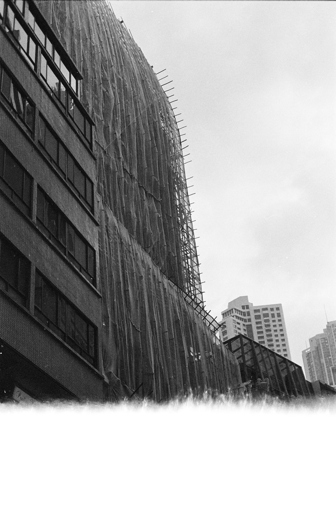
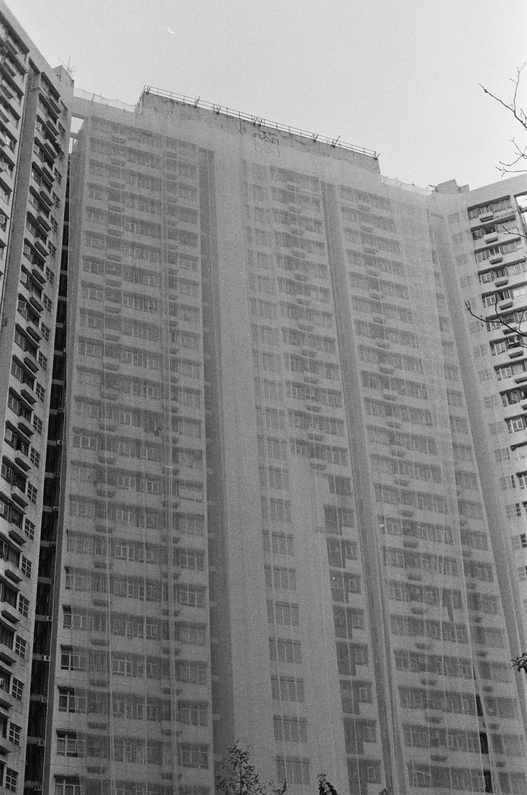
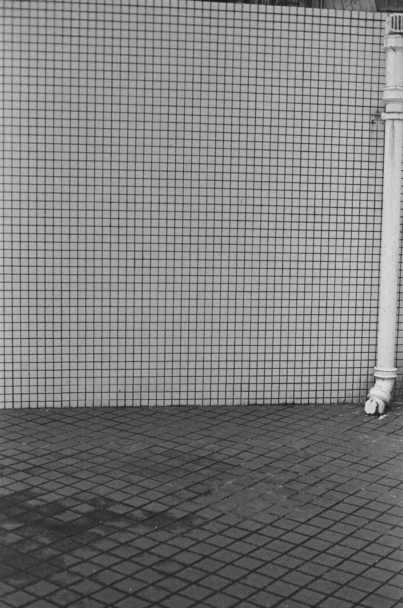
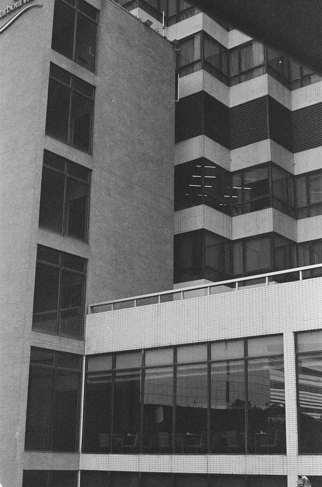
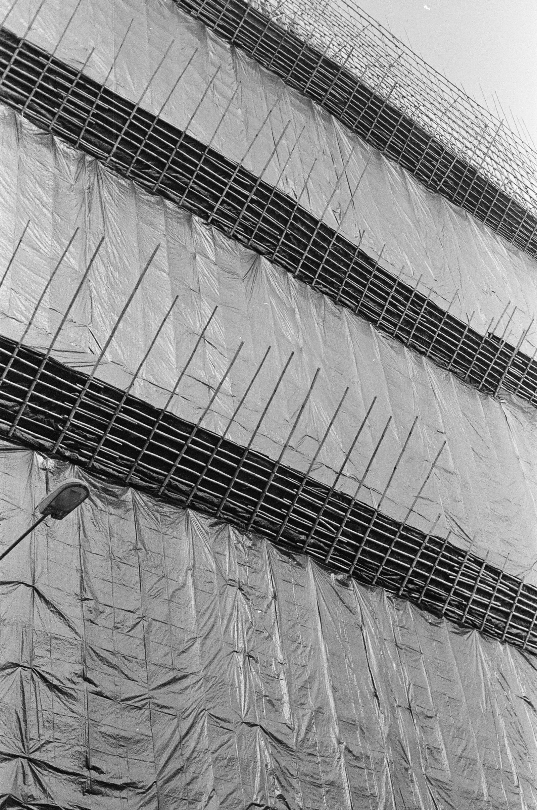
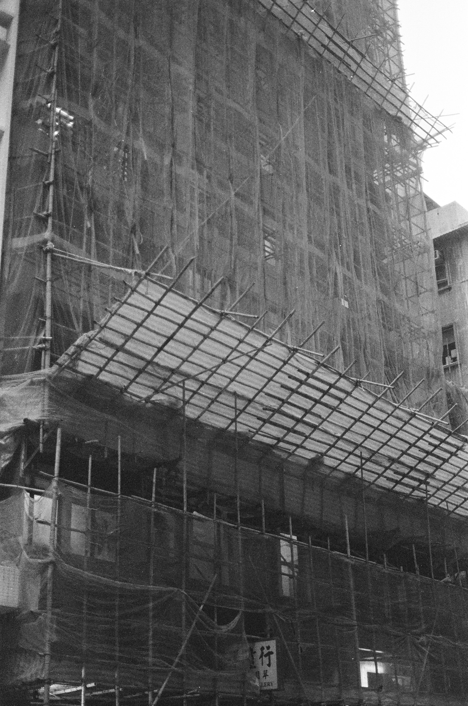
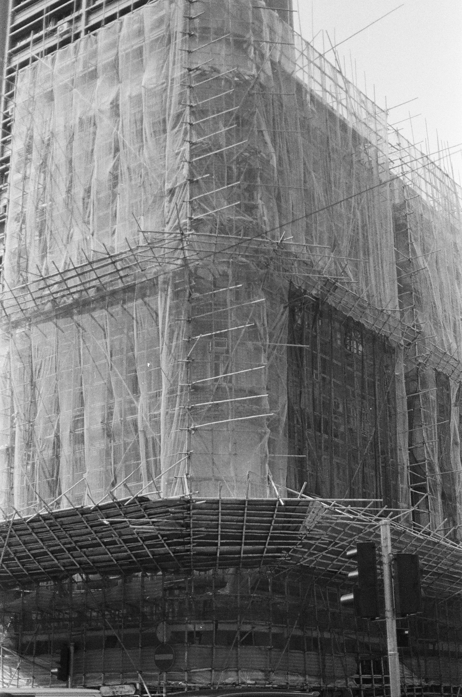
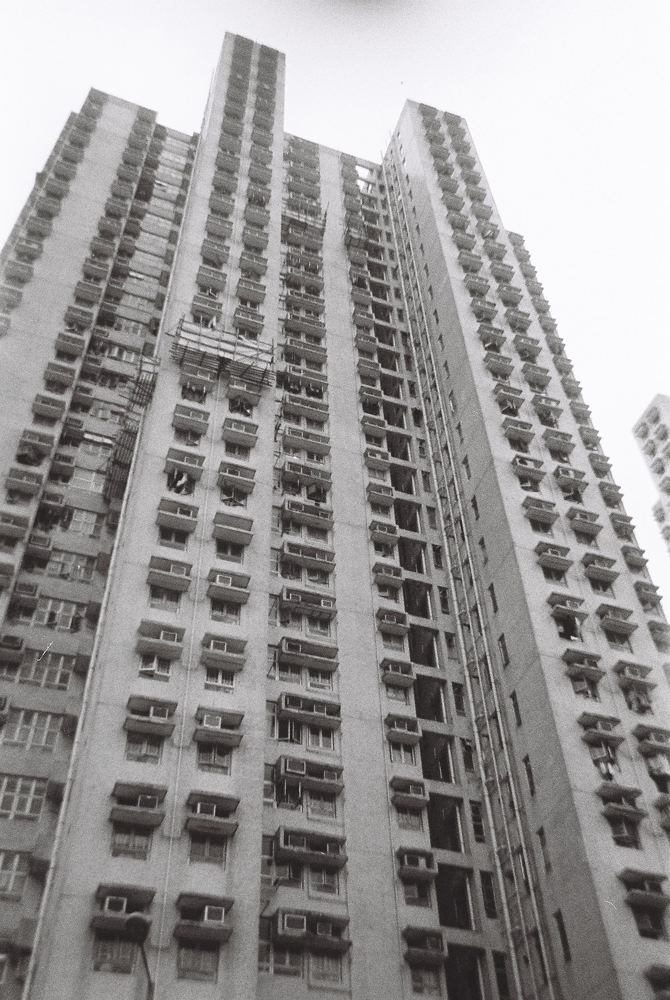
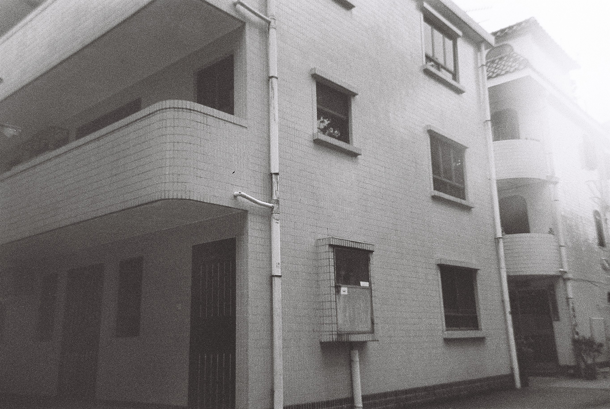

Building | black and white film
Apr/May 2021
我來到這個城市已經2個月，我能夠感受到這裡和家的不同，尤其是在建築空間上。狹小的房子房租卻非常昂貴。“建築”是我來到這裡第一個想要和需要了解的東西。我必須開始租房，我開始自己生活instead of living in the dorm。建築在這個時候出現在我的腦子然後我開始忍不住去想和思考“建築”這個詞匯所帶來的意義。當我去到香港不同的地方會忍不住看多幾眼房地產廣告。開始更多關注這種信息。香港的建築物空間非常有限，低價也非常昂貴，許多人只能住在很小的房子裡，但有錢人住的房子也不會太大。這是非常有趣的地方。我在以前就有了解，但是我每次來香港都是住在鄉下，我無法真正理解這種狹小的房子意味著什麼until兩個月前。所以我認為這是一個非常值得探討的方向。並且我將這個作為一個新的題材是我之前沒有做過的。我對此非常激動。儘管我的攝影作品看起來沒有很好，但是我正在努力將自己投射進這個方向里。雖然這個話題已經被在政治經濟，社會學或人類學的角度上探討了無數次，結論是什麼我其實也沒有很在乎。在藝術領域中我更在乎的是我自己，我嘗試尋找我自己在狹小建築中的情緒和一些更加敏感的東西，這種尋找的內容是真正令我進步的方式。也是一種在不斷成熟的過程中保持著好奇心。







